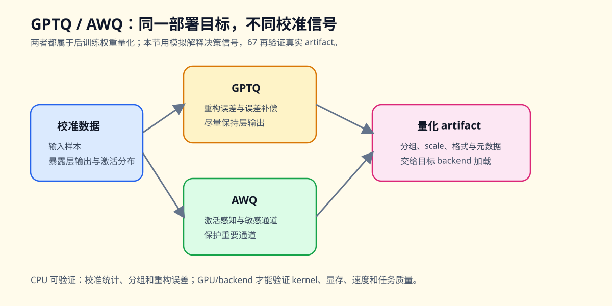

40. GPTQ and AWQ Weight Quantization | GPTQ 与 AWQ 权重量化
难度： Hard | 环境： CPU-first | 标签： 量化压缩, 权重量化, GPTQ/AWQ | 目标人群： 量化压缩学习者
本节导读
第 25 节和第 26 节已经把量化的两条主线铺开：W8A16 说明了 weight-only 量化如何减少权重读取压力，QLoRA 说明了 4-bit 权重如何服务于低成本微调。但部署阶段还会遇到一个更细的问题：同样是把权重压到低比特，哪些权重更敏感，哪些误差可以接受，校准数据又应该如何参与量化决策？
本节用一个极简 WeightQuantizerSim 模拟 GPTQ / AWQ 的核心直觉：GPTQ 更关注校准后的重构误差，AWQ 更强调激活感知和敏感通道保护。学完后，你应该能看清“校准 -> 分组 -> 量化 -> 保护 -> 反量化 -> 误差检查”这条权重量化链路。
本节还会把三类对象放到同一条链路中比较：GPTQ 关注校准后的误差补偿，AWQ 关注激活感知和敏感通道保护，GGUF 负责量化权重的文件格式与部署封装。真实 artifact、backend 和 kernel 的验证继续连接到 67. 量化推理与部署。
关键词： GPTQ, AWQ, weight quantization

题目与测试代码 · Cell 8
class WeightQuantizerSim(nn.Module):
"""极简版 GPTQ / AWQ 权重量化模拟器。"""
def __init__(self, bits: int = 4, group_size: int = 32, method: str = "gptq", protect_ratio: float = 0.05, eps: float = 1e-8):
super().__init__()
if bits < 2:
raise ValueError("bits must be >= 2")
if group_size <= 0:
raise ValueError("group_size must be positive")
self.bits = bits
self.group_size = group_size
self.method = method.lower()
self.protect_ratio = protect_ratio
self.eps = eps
self.qmax = 2 ** (bits - 1) - 1
self.register_buffer("qweight", torch.empty(0, dtype=torch.int8), persistent=False)
self.register_buffer("scales", torch.empty(0), persistent=False)
self.register_buffer("protected_weight", torch.empty(0), persistent=False)
self.register_buffer("protected_mask", torch.empty(0, dtype=torch.bool), persistent=False)
self.register_buffer("importance", torch.empty(0), persistent=False)
self.weight_shape = None
def _collect_importance(self, activations: torch.Tensor, in_features: int) -> torch.Tensor:
act = activations.detach().float()
if act.ndim == 1:
importance = act.abs()
else:
reduce_dims = tuple(range(act.ndim - 1))
# ==========================================
# TODO 1: 根据校准激活统计输入通道重要性
# 提示: 对除最后一维外的维度求 RMS，最后一维对应 in_features
# ==========================================
# importance = ???
if importance.numel() != in_features:
raise ValueError(f"Calibration importance dim mismatch: expected {in_features}, got {importance.numel()}")
return importance
def fit(self, weight: torch.Tensor, activations: torch.Tensor | None = None) -> "WeightQuantizerSim":
w = weight.detach().float()
if w.ndim != 2:
raise ValueError("WeightQuantizerSim only supports 2D linear weights.")
out_features, in_features = w.shape
self.weight_shape = (out_features, in_features)
importance = torch.ones(in_features, device=w.device, dtype=w.dtype) if activations is None else self._collect_importance(activations, in_features)
self.importance = importance
# ==========================================
# TODO 2: 计算输入维度需要被切成多少个 group
# 提示: 使用向上取整，最后一组可以不足 group_size
# ==========================================
# n_groups = ???
qweight = torch.zeros_like(w, dtype=torch.int8)
scales = torch.zeros((out_features, n_groups), dtype=w.dtype, device=w.device)
protected_weight = torch.zeros_like(w)
protected_mask = torch.zeros_like(w, dtype=torch.bool)
for row in range(out_features):
for g in range(n_groups):
start = g * self.group_size
end = min(start + self.group_size, in_features)
wg = w[row, start:end]
ig = importance[start:end]
if wg.numel() == 0:
continue
mask = torch.zeros_like(ig, dtype=torch.bool)
if self.method == "awq":
k = max(1, int(round(wg.numel() * self.protect_ratio)))
k = min(k, wg.numel())
topk = torch.topk(ig, k=k, largest=True).indices
# ==========================================
# TODO 3: 标记本组中需要保护的敏感通道
# 提示: topk 是通道下标，把这些位置在 mask 中置为 True
# ==========================================
# mask[topk] = ???
protected_mask[row, start:end] = mask
protected_weight[row, start:end] = wg * mask.to(wg.dtype)
base = wg[~mask]
if base.numel() == 0:
base = wg
# ==========================================
# TODO 4: 为未保护的普通通道计算分组 scale
# 提示: 对称量化 scale = absmax / qmax，并用 eps 避免除零
# ==========================================
# scale = ???
q_group = torch.zeros_like(wg, dtype=torch.int8)
q_group[~mask] = torch.clamp(torch.round(wg[~mask] / scale), -self.qmax, self.qmax).to(torch.int8)
qweight[row, start:end] = q_group
scales[row, g] = scale
self.qweight = qweight
self.scales = scales
self.protected_weight = protected_weight
self.protected_mask = protected_mask
return self
def dequantize(self) -> torch.Tensor:
if self.weight_shape is None:
raise RuntimeError("Call fit() before dequantize().")
out_features, in_features = self.weight_shape
n_groups = self.scales.size(1)
weight = torch.zeros((out_features, in_features), dtype=self.scales.dtype, device=self.scales.device)
for row in range(out_features):
for g in range(n_groups):
start = g * self.group_size
end = min(start + self.group_size, in_features)
scale = self.scales[row, g]
q_group = self.qweight[row, start:end].to(self.scales.dtype)
# ==========================================
# TODO 5: 将整数权重反量化回浮点近似值
# 提示: 量化时除以 scale，恢复时乘回 scale
# ==========================================
# dequant = ???
protected = self.protected_mask[row, start:end]
if protected.any():
dequant = dequant.clone()
dequant[protected] = self.protected_weight[row, start:end][protected]
weight[row, start:end] = dequant
return weight
def forward(self, x: torch.Tensor) -> torch.Tensor:
if self.weight_shape is None:
raise RuntimeError("Call fit() before forward().")
weight = self.dequantize().to(x.dtype)
return F.linear(x, weight)
def mse(self, weight: torch.Tensor) -> torch.Tensor:
recon = self.dequantize().to(weight.dtype)
# ==========================================
# TODO 6: 计算原始权重和恢复权重之间的均方误差
# 提示: 先相减、平方，再求平均
# ==========================================
# error = ???
return error
题目与测试代码 · Cell 9
# 测试你的实现
def test_weight_quantizer():
try:
torch.manual_seed(0)
weight = torch.randn(4, 8)
acts = torch.randn(16, 8)
sim = WeightQuantizerSim(bits=4, group_size=4, method="awq", protect_ratio=0.25).fit(weight, acts)
restored = sim.dequantize()
y = sim.forward(torch.randn(2, 8))
assert sim.qweight.dtype == torch.int8
assert sim.scales.shape == (4, 2)
assert sim.importance.shape == (8,)
assert sim.protected_mask.any()
assert restored.shape == weight.shape
assert y.shape == (2, 4)
assert float(sim.mse(weight)) >= 0.0
gptq = WeightQuantizerSim(bits=4, group_size=4, method="gptq").fit(weight, acts)
assert not gptq.protected_mask.any()
assert gptq.dequantize().shape == weight.shape
print("✅ WeightQuantizerSim 测试通过")
except NotImplementedError as e:
raise NotImplementedError("请先完成 TODO 代码！") from e
except (AttributeError, NameError, TypeError, ValueError, RuntimeError, AssertionError) as e:
raise NotImplementedError("请先完成 TODO 代码！") from e
test_weight_quantizer()
本区由当前 Notebook 题目区生成。下面的精讲用于概念练习；回到 Notebook 时以本区的函数签名、TODO 和测试为准。参考答案及可选实验请在 Notebook 中查看。